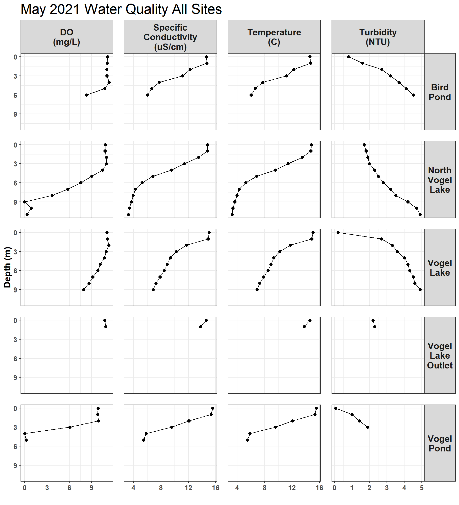

3 Miller Creek Discharge
3.0.1 Introduction
Field data to create a ratings curve of discharge at the mouth of Miller Creek is being collected from Fall 2020 - Spring 2021. These methods and results will be presented here.
Raw water quality field data is stored in a Google Sheet that can be viewed at https://tinyurl.com/kwf-vogel-wqx-data under the “Discharge Measurements” tab.
Site photos are available through a point-and-click pop-up map at https://arcg.is/0fqvb0.
3.0.2 Miller Creek Discharge Rating Curve
A discharge station was established in October 2020 near the mouth of Miller Creek, including a staff plate and pressure transducer.
Site visits will be made opportunistically depending on precipitation throughout Summer/Fall 2021. At each site visit, the pressure transducer is downloaded and a discharge measurement is collected using a SondeTek Flowtracker.
Once a minimum of eight discharge measurements are available in Fall 2021, a curve will be fit to the scatter plot of stage height vs. discharge. This relationship will be used in conjunction with pressure transducer data to create a graph of flow.
p <- discharge_dat %>%
ggplot(aes(Staff_Plate_Height, Q_Discharge_cfs)) +
geom_point()
fig <- ggplotly(p)
fig3.0.3 Pressure Transducer Data
Plot pressure transducer data (work in progress here 8/6/2021)
pt %>%
ggplot(aes(datetime,val)) +
geom_point() +
facet_grid(param ~ .)
# to do : use anti_join methodology to excise non-instream data
# convert to plotly line chart?